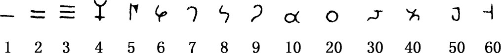
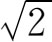

1．早期印度数学
在数学史上，希腊人的后继者是印度人。虽然印度的数学只是在受到希腊数学成就的影响后才颇为可观，但他们也有早期具有本地风光的数学值得一提。
印度文明可远溯到公元前2000年，但据今日所知，他们在公元前800年以前是没有数学的。在公元前800年到公元200年的绳法经（Śulvasūtra）时期，印度人确也创造出一些原始数学。他们没有专门记载数学的文件，但我们可以从其他著述中，从钱币和铭文中，掇拾出少量有关数学的事实。
大约在公元前3世纪以后，出现了数的记号，但每个世纪都有相当大的变动。典型的是婆罗米（Brahmi）式记号：

这一组记号的出色之处是它给1到9的每个数都有单独的记号。这里还没有零和进位记法。对当时这个数学上尚未开化的人民来说，他们肯定还没有看出单独的数字记号的好处；这种写法也许是由于以该数名称的第一个字母来代替它而产生的。
有一类宗教经文叫绳法经，内含修筑祭坛的法则。在公元前4或5世纪的一部绳法经里给出了

的近似值，但看不出他们知悉这仅仅是个近似值。其他关于这时期的算术我们几乎就一无所知。对这段古印度时期的几何我们知道得比较多一些。绳法经中所含的法则规定了祭坛形状和尺寸所应满足的条件。最常用的三种形状是方、圆和半圆，但不管用哪种形状，祭坛面积必须相等。因此印度人要作出与正方形等面积的圆，或两倍于正方形面积的圆以便采用半圆形的祭坛。另外一种形状是等腰梯形，并且这里可用相似形。因此在作相似形的时候会引起新的几何问题。
在设计这种规定形状的祭坛时，印度人必须懂得一些基本的几何事实，例如毕达哥拉斯定理，他们是这样说的：“矩形对角线生成的面积［正方形］等于矩形两边各自生成的两块面积之和。”一般说来，这段时期的几何只不过是一些不相连贯的用文字表达的求面积和体积的近似法则。公元前4或5世纪的阿帕斯塔姆巴（Āpastamba）给出一个作圆等于正方形面积的方法，他实际上是取π等于3.09，但他认为这作图法是准确的。在这早期的全部几何里没有证明，法则都是经验性的。